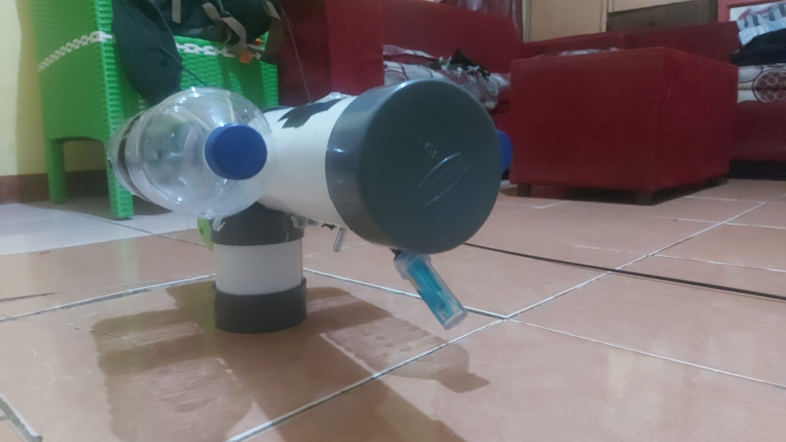
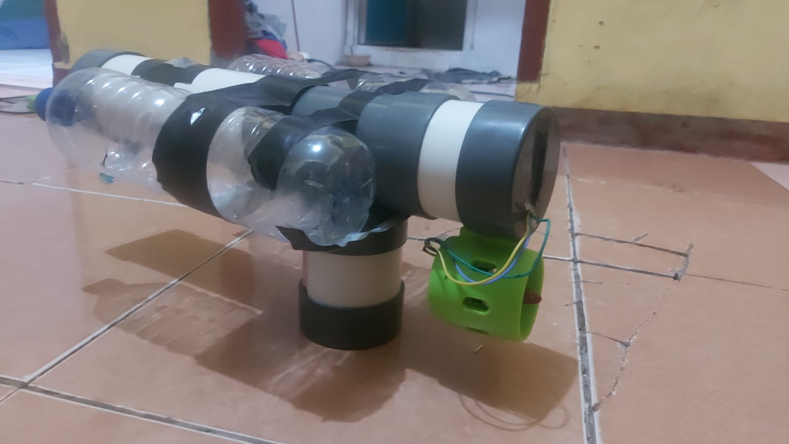

Sensor Canggih untuk Monitoring Air
Sephon 32 hadir dengan tiga sensor berkualitas tinggi yang bekerja secara simultan untuk menghasilkan data kualitas air yang akurat dan real-time.
Sensor pH
Akurasi Tinggi · Keasaman Air
Mengukur tingkat keasaman (pH) air secara presisi. Penting untuk memastikan kualitas air layak bagi ekosistem akuatik dan kebutuhan industri.

Sensor Turbidity
Optik Presisi · Kekeruhan Air
Menggunakan teknologi optik canggih untuk mendeteksi partikel tersuspensi dalam air. Sensor kekeruhan ini memberikan pembacaan NTU yang akurat untuk menilai kejernihan air.

Sensor Suhu
Presisi Tinggi · Fluktuasi Termal
Memonitor perubahan suhu air secara kontinu. Fluktuasi suhu yang krusial bagi kehidupan akuatik dapat terdeteksi dengan resolusi 0.1°C untuk analisis data yang mendalam.